diagram/block_diagram.svg).Machine Learning – Midterm Project Report
| Name | Last name | Student ID |
|---|---|---|
| TBD | TBD | TBD |
| TBD | TBD | TBD |
| TBD | TBD | TBD |
Submitted files: math_buddy_its.ipynb (code + outputs),
outputs/ (figures), diagram/block_diagram.svg, test_drawings/, requirements.txt, this report.
November 2026
An intelligent tutoring system (ITS) is software that teaches a student one-to-one, the way a good private teacher would: it observes the student, estimates what the student already knows, chooses the next exercise accordingly, and reports progress to the teacher. Every one of these abilities is a prediction or a grouping problem, so an ITS can be described as a set of machine learning tasks.
Our system, Math Buddy, is a tablet tutor for elementary school mathematics (addition, subtraction,
multiplication, division and fractions). It interacts with the child through three modalities – text (chat),
visual (handwriting on the screen, front camera) and audio (spoken answers, tone of voice). We split its
functionality into nine blocks; each block is exactly one supervised or one unsupervised learning task. All blocks are
implemented in one Jupyter notebook, math_buddy_its.ipynb, in Python with scikit-learn. This report explains
each section of the code and each section of its output.
The table lists what we expect from an ITS for young children and which block of Math Buddy satisfies each requirement.
| # | Requirement | How Math Buddy fulfils it |
|---|---|---|
| R1 | Know the learner as a person – interests and attitude, to keep a child motivated | B1 detects interests (sports, animals, food, games) and the sentiment of chat messages; word problems are built around a positive interest. |
| R2 | Find the topics the learner struggles with | B2 detects the struggle topic from what the child writes; B6 confirms it from the answers. |
| R3 | Natural, child-friendly input – a 3rd grader should not need a keyboard | B3 reads digits written with a finger; B5a recognises spoken digits. Each is a fallback for the other. |
| R4 | Monitor engagement and react to it | B4 classifies attention from camera features (attentive / distracted / tired) and the tutor reacts (message, break). |
| R5 | Distinguish knowing from guessing | B5b classifies a spoken answer as confident or hesitant; B6 uses the hesitation history. |
| R6 | Measure the percentage of accurately learning each subject and its variation over time (requirement from the previous assignment) | B6 estimates mastery (%) per topic after every answer and keeps it as a time series. |
| R7 | Diagnose why answers are wrong, not only how often | B7 discovers error types (forgotten carry, careless slip, wrong operation, fraction rule) without labels. |
| R8 | Extract learning patterns to develop better teaching mechanisms (requirement from the previous assignment) | B8 groups students into learning profiles and attaches a teaching recommendation to each profile. |
| R9 | Adaptivity – choose the next question from the estimated knowledge | Question selection uses B1, B2 and B6 (weak topics, start easy when the sentiment is negative). |
| R10 | Reporting to the teacher | Teacher dashboard: B6 mastery curves, B7 error types per week, B8 profile and recommendations. |
| R11 | Reliability, privacy and robustness – work with a new child, missing camera data, an unknown voice | Train/test split by student (B6), missing-value imputation (B4), voice calibration (B5a.9), real-drawing test (B3.8–B3.9). |
Can is a 3rd grader who uses the Math Buddy app on a tablet after school. One session looks like this:
Every rectangle with a solid border is a learning task: blue = supervised, orange = unsupervised. Dashed boxes are ordinary application logic (no learning). The six perception blocks on top are grouped by modality. Their outputs flow into B6 (mastery), whose answer log feeds the two unsupervised blocks B7 and B8; the results reach the teacher dashboard.
diagram/block_diagram.svg).| Block | Task | Learning type | Modality | Data | Model |
|---|---|---|---|---|---|
| B1 | Interest detection (+ sentiment) | Supervised, 4-class (+3-class) | Text | Synthetic | TF-IDF + Logistic Regression |
| B2 | Struggle topic detection (+ sentiment) | Supervised, 5-class (+3-class) | Text | Synthetic | TF-IDF + Logistic Regression |
| B3 | Handwritten digit recognition | Supervised, 10-class | Visual | Real (load_digits, MNIST) | LogReg (8×8), Random Forest (28×28) |
| B4 | Attention detection | Supervised, 3-class | Visual | Synthetic | Imputer + Random Forest |
| B5a | Spoken digit recognition | Supervised, 10-class | Audio | Real (FSDD) | MFCC + Logistic Regression |
| B5b | Confidence detection | Supervised, binary | Audio | Synthetic | Logistic Regression |
| B6 | Mastery percentage over time | Supervised, probability | Combined | Simulation | ColumnTransformer + Logistic Regression |
| B7 | Error type discovery | Unsupervised, clustering | Combined | Simulation | Feature design + K-Means |
| B8 | Student profiles | Unsupervised, clustering | Combined | Simulation | K-Means |
This section answers the two questions of the assignment: what are the attributes of the dataset fed to each block, and what is the structure of the output of each block. For a supervised block, one row is one training example with a label; for an unsupervised block there is no label.
| Block | One row = | Input attributes (type / range) | Label | Output structure |
|---|---|---|---|---|
| B1 | one chat message | message – free English text (turned into a TF-IDF vector) | interest, sentiment | {interest ∈ {sports, animals, food, games}, probability, sentiment ∈ {positive, neutral, negative}, use_for_problems: bool} |
| B2 | one message about math | message – free English text | topic, sentiment | {topic ∈ {addition, subtraction, multiplication, division, fractions}, probability, sentiment, start_easy: bool} |
| B3 | one handwritten digit image | pixel_1 … pixel_64 – ink 0–16 (8×8 image); improved model: 784 pixels 0–255 (28×28 MNIST) | digit 0–9 | {digit: 0–9, probability: 0–1} |
| B4 | one 10-second camera window | screen_gaze_ratio (0–1), head_angle (degrees 0–60), blink_rate (per minute); values may be missing | state | {state ∈ {attentive, distracted, tired}, probabilities: {state: p}} |
| B5a | one recording (.wav, 8 kHz) | mfcc_mean_1…20, mfcc_std_1…20 – 40 real numbers | digit 0–9 | {digit: 0–9, probability: 0–1} |
| B5b | one spoken answer | speech_rate (syllables/s), pause_count (integer), response_delay (s), pitch_variation (semitones) | state | {state ∈ {confident, hesitant}, p_hesitant: 0–1} |
| B6 | one answer of a student | topic (one-hot), difficulty (1–3), attempt_no, prev_correct_ratio, recent_correct_ratio, prev_hesitant_ratio (from B5b), attention (one-hot, from B4); student_id, timestamp for ordering only | is_correct (0/1) | P(correct) of one question; b6_mastery() → {topic: mastery %}; repeated over days → time series |
| B7 | one wrong answer | operation, correct_answer, given_answer (from B3/B5a), difference, ratio, needs_carry → derived: size_ratio_log, error_steps_log, diff_is_tens, same_denominator | none | cluster_id 0–3 → {error_type ∈ {forgot_carry, careless_slip, wrong_operation, fraction_rule}, hint}; per student: share of each type and characteristic_error |
| B8 | one student | avg_accuracy (0–1), learning_speed (slope), avg_attention (0–1, from B4), spoken_answer_ratio (0–1), characteristic_error (one-hot, from B7) | none | profile_id 0–3 → {profile name, recommendations[], error hint} |
The notebook starts with a header (title, group members, overview table of the blocks) and a Setup cell, followed by one section per block. Every supervised block follows the same template, so a reader always knows where to look:
1. Data → 2. Preprocessing → 3. Train/test split → 4. Model → 5. Evaluation → 6. Example prediction (Can) → 7. Block function
The unsupervised blocks replace the split with choosing the number of clusters and evaluation by interpreting the clusters. The blocks appear in the order B3, B5a, B4, B5b, B1/B2, B6, B7, B8 – B6 needs the outputs of B4 and B5b, B7 needs B6, and B8 needs B6 and B7.
RANDOM_STATE = 42 # same random choices on every run OUTPUT_DIR = "outputs" # folder for the report figures def save_figure(fig, filename): ... # saves every plot as PNG (150 dpi)
The setup imports numpy, pandas, matplotlib and scikit-learn. A fixed RANDOM_STATE makes every run produce the same
data, splits and models (reproducibility). save_figure writes every plot to outputs/; all figures in this report
come from there. Output: Setup complete.
Pipeline.
Calling fit on the pipeline fits them on the training data only; the test data is only transformed.
This prevents data leakage (information about the test set influencing training).ColumnTransformer in B6 and B8).stratify=y) keep the class proportions equal in training and test data.b4_detect_attention(gaze, head, blink)).
Other blocks use each other only through these functions.Role: Can writes his answer with his finger; the tutor must read the digit to grade the answer.
digits = load_digits()
pixel_columns = [f"pixel_{i}" for i in range(1, 65)]
b3_df = pd.DataFrame(digits.data, columns=pixel_columns); b3_df["digit"] = digits.target
Code: scikit-learn's load_digits contains 1,797 real handwritten digits, each an 8×8 image. Every image is flattened
row by row into 64 numbers and stored with our column names pixel_1 … pixel_64 plus the label digit.
Output: shape (1797, 65); about 180 examples per digit (174–183), so the classes are balanced. The first rows show pixel values between 0 (white) and 16 (full ink).
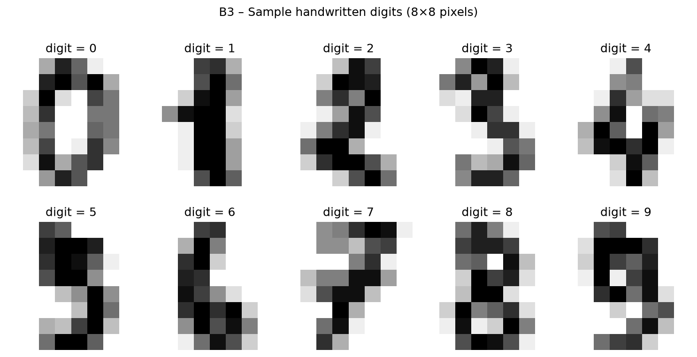
Code: checks missing values and the value range, separates X_b3 (64 pixels) and y_b3 (label), and calls
train_test_split(..., test_size=0.2, stratify=y_b3, random_state=RANDOM_STATE).
Output: 0 missing values, range 0–16; training set (1437, 64), test set (360, 64).
b3_model = Pipeline([("scaler", StandardScaler()),
("classifier", LogisticRegression(max_iter=2000, random_state=RANDOM_STATE))])
b3_model.fit(X_b3_train, y_b3_train)
The pipeline standardises each pixel (mean 0, standard deviation 1, learned on training data) and trains a multi-class
Logistic Regression, which learns one weight per pixel and digit and outputs a probability for each of the 10 digits.
max_iter=2000 gives the optimiser enough iterations to converge.
B3 test accuracy: 0.972 digit 1: precision 0.89 recall 0.89 | digit 8: precision 0.89 recall 0.89 | all other digits ≥ 0.97
Output: 97.2 % of the 360 unseen test images are read correctly. The only weaker digits are 1 and 8, which the confusion matrix shows are mostly confused with each other (four 8s read as 1, two 1s read as 8) – at 8×8 resolution a slanted 1 and a thin 8 share many pixels.

The tutor asks "3 players are on the bench and 4 more join. How many players now?". Can's handwriting is simulated with an
unseen test image of a 7. Output: {'digit': 7, 'probability': 0.999} → answer CORRECT; top-3 candidates 7 (0.999), 3, 2.
The block function b3_read_handwriting(pixels) wraps this: input 64 pixel values, output {digit, probability}.
We tested the model on digits that were drawn rather than taken from the dataset: three digits typed on an 8×8 grid and a real
6 drawn with a mouse (test_drawings/drawn_six.png), shrunk to 8×8 in two ways.
Output: all five are misread (thin 1 → 3, small 4 → 8, thin 0 → 4, real 6 → 4 or 5), several with probability above 0.99.

Interpretation: (1) distribution shift – load_digits images are soft, grey and thick, real strokes are thin and crisp, so a high test accuracy does not guarantee good results in practice, and a high probability is not a guarantee either; (2) 8×8 is too small – the loop of the 6 disappears.
Code: fetch_openml("mnist_784", parser="liac-arff") loads MNIST (70,000 digits by ~500 writers, 28×28 pixels 0–255) with the
official split of 60,000 training and 10,000 test images. A RandomForestClassifier(n_estimators=100) is trained (trees need no
scaling and handle 784 raw pixels well). drawing_to_mnist(ink) prepares any drawing exactly like MNIST: crop → thicken the
line by 8 % → fit into a 20×20 box → move the centre of mass to the middle of a 28×28 image. b3_read_drawing(ink) is the B3 block
function used for real drawings.
B3 (MNIST) test accuracy: 0.969 (8×8 load_digits model: 0.972)
8×8 model : {'digit': 5, 'probability': 0.495}
MNIST model: {'digit': 6, 'probability': 0.75}
Output: similar test accuracy (96.9 %), but the real drawing of the 6 is now read correctly, because its hole survives at 28×28.
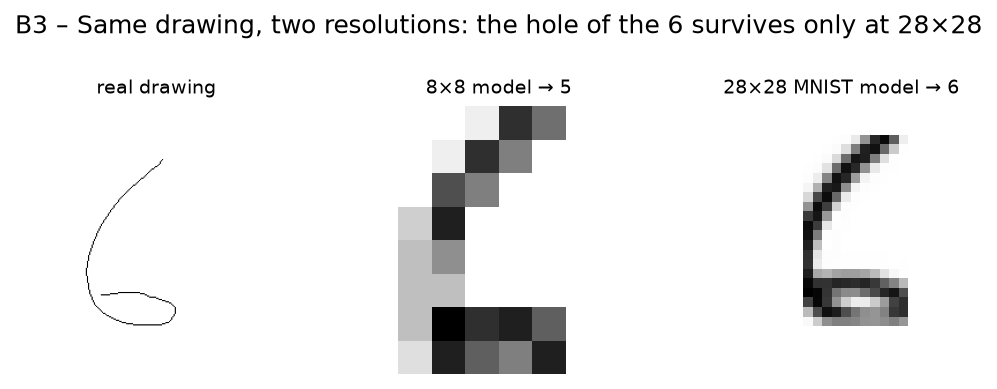
Role: instead of writing, Can can say his answer aloud; the tutor recognises the spoken digit.
def extract_mfcc_features(wav_path):
signal, sr = librosa.load(wav_path, sr=8000)
mfcc = librosa.feature.mfcc(y=signal, sr=sr, n_mfcc=20, n_fft=512) # (20, n_frames)
return np.concatenate([mfcc.mean(axis=1), mfcc.std(axis=1)]) # 40 numbers
Code: the Free Spoken Digit Dataset (FSDD) contains 3,000 real English recordings: 6 speakers × 10 digits × 50 repetitions.
The label is the first character of the file name (9_george_3.wav → 9). A recording is a long list of air-pressure values with a
different length each time. MFCCs (Mel-frequency cepstral coefficients) describe the shape of the sound spectrum in short frames,
similar to how the ear hears; each frame gives 20 numbers. Taking the mean and standard deviation of every coefficient over all
frames gives a fixed vector of 40 features per recording.
Output: table of shape (3000, 43) – 40 features, digit, speaker and file_name (speaker and file name are only
kept for analysis); 300 recordings per digit and 500 per speaker.
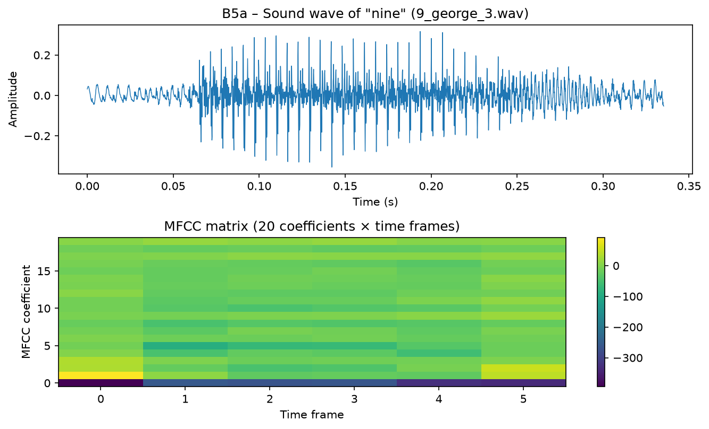
Output of preprocessing: no missing values; the feature ranges differ strongly (mfcc_mean_1 from −695 to −244, mfcc_std_20
from 0.6 to 28), so StandardScaler is required. 80/20 stratified split: 2,400 training and 600 test recordings. The model is the same
pipeline as in B3: StandardScaler → LogisticRegression(max_iter=3000).
B5a test accuracy: 0.915 (digit 4: F1 1.00 ... digit 6: F1 0.85, digit 3: F1 0.86)
91.5 % of the test recordings are recognised. "Four" is always recognised correctly, while "three" and "six" are the hardest digits (F1 0.86 and 0.85).

Tutor: "Your team scored 4 goals in the first half and 5 in the second. How many in total?" – Can says "nine" (test recording
9_jackson_44.wav). Output: {'digit': 9, 'probability': 0.944} → CORRECT. Block function:
b5a_recognize_speech(wav_path) → {digit, probability}.
The random split puts recordings of the same six speakers into training and test data, so the model already "knows" every test voice.
Can's voice, however, is new. LeaveOneGroupOut trains on 5 speakers and tests on the sixth, for every speaker.
unseen speaker: george 0.252 jackson 0.550 lucas 0.434 nicolas 0.320 theo 0.702 yweweler 0.718 Average accuracy on an unseen speaker: 0.496 (random split: 0.915)
Interpretation: on an unknown voice the accuracy halves. Six speakers are far too few to generalise to a child's voice.
Idea: on the first day the tutor plays "Say each number after me!". These k recordings per digit of the new student are added to the training data. Code: every speaker in turn plays "Can"; the training data is the other 5 speakers + k calibration recordings per digit; the test data is the remaining recordings of the new speaker (calibration recordings are never tested – no leakage).
| Calibration recordings per digit (k) | 0 | 1 | 2 | 3 | 5 | 10 |
|---|---|---|---|---|---|---|
| Average accuracy on the new speaker | 0.496 | 0.612 | 0.658 | 0.699 | 0.755 | 0.821 |

Interpretation: 30 recordings (≈ 1 minute, k = 3) raise the accuracy from 50 % to 70 %; 100 recordings reach 82 %. A short calibration game is therefore part of the design, and the B8 profile "Prefers speaking" recommends it.
Role: every few seconds the front camera decides whether Can is attentive, distracted or tired; the tutor reacts and B6 uses the state.
Code: generate_attention_data draws 500 rows per state from normal distributions around an assumed "signature":
| State | screen_gaze_ratio | head_angle | blink_rate |
|---|---|---|---|
| attentive | ~0.85 | ~6° | ~15 / min |
| distracted | ~0.45 | ~25° (looking away) | ~17 / min |
| tired | ~0.65 | ~15° (head drooping) | ~26 / min (high) |
Values are clipped to physically possible ranges, and about 3 % of the values are set to missing (NaN) to imitate moments when the camera loses the face. Output: (1500, 4), 500 rows per state; the group averages match the signatures (e.g. attentive gaze 0.85, tired blink 26.08).
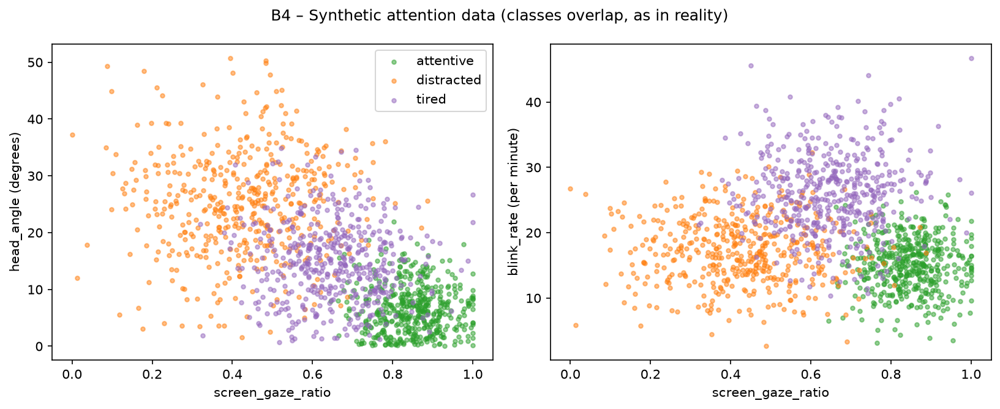
Output: missing values per column: gaze 50, head 41, blink 45. They are filled with the median of the training data by
SimpleImputer(strategy="median") inside the pipeline. No scaling: a Random Forest asks threshold questions
("gaze < 0.6?"), whose answers do not change when a feature is rescaled.
b4_model = Pipeline([("imputer", SimpleImputer(strategy="median")),
("classifier", RandomForestClassifier(n_estimators=200, max_depth=6, random_state=RANDOM_STATE))])
Split: 1,200 training and 300 test windows. A decision tree classifies by a sequence of yes/no questions learned from the data;
a single deep tree tends to memorise. A Random Forest trains 200 trees, each on a bootstrap sample of the rows and with a random subset of
features at every question, and lets them vote; the share of votes is the probability. max_depth=6 limits memorisation.
Training accuracy: 0.946 Test accuracy: 0.897 Gap: 0.049 (small gap -> no strong overfitting) attentive F1 0.96 | distracted F1 0.88 | tired F1 0.86 Feature importance: screen_gaze_ratio 0.418, blink_rate 0.299, head_angle 0.283
Interpretation: 89.7 % test accuracy with only a small gap to the training accuracy. "Attentive" is easy; distracted and tired are sometimes confused because both have medium gaze and head angle. Gaze is the most important feature; blink rate is what separates tired from distracted.

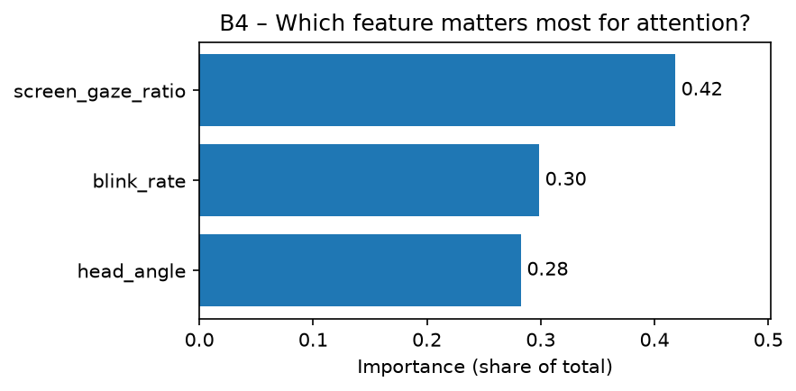
Can looking out of the window -> distracted (attentive 0.002, distracted 0.988, tired 0.011) Can focused on the problem -> attentive (0.981) Can sleepy after school -> tired (0.955) Camera lost the face (NaN) -> attentive (0.502, distracted 0.199, tired 0.300)
b4_detect_attention(screen_gaze_ratio, head_angle, blink_rate) returns {state, probabilities} and the tutor reacts
(distracted → short attention message, tired → 5-minute break). When the gaze value is missing it is replaced by the median, so the
model sees an "average" child and is uncertain (≈ 50 %). We keep this simple behaviour; in a real system, losing the face for a long time
could itself be a signal.
Role: B5a decides what Can said; B5b decides how he said it. "Nine!" and "Hmm… nine?" are the same answer, but the second is probably a guess, i.e. weaker evidence of mastery. (This is paralinguistic analysis, not sentiment analysis of the words.)
Code: generate_confidence_data(600, 400) creates 600 confident and 400 hesitant answers (imbalanced, as children usually answer
what they know). Assumed means – confident: 4.0 syllables/s, 0.5 pauses, 1.2 s delay, pitch variation 2.0; hesitant: 2.9, 2, 2.8 s, 3.0.
pause_count is drawn from a Poisson distribution (whole numbers ≥ 0) and response_delay from a log-normal
distribution (positive, long right tail). Output: (1000, 5); group means close to the assumptions.
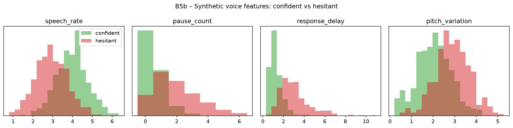
No missing values. Features have different units (seconds, counts, semitones), so StandardScaler is used; it also makes the
coefficients comparable. The stratified split keeps 40 % hesitant answers in both parts (800 / 200). The model is a binary Logistic Regression:
P(hesitant) = 1 / (1 + e−(w1·speech_rate + w2·pause_count + w3·response_delay + w4·pitch_variation + b)); hesitant if ≥ 0.5.
Training accuracy: 0.931 Test accuracy: 0.935
confident F1 0.95 | hesitant F1 0.92
Coefficients (positive -> more hesitant): response_delay +2.734, pause_count +1.474,
pitch_variation +1.188, speech_rate -1.497
Interpretation: 93.5 % test accuracy, no overfitting (training ≈ test). The longest thinking time before answering is the strongest sign of hesitation, followed by pauses; fast speech points to confidence.
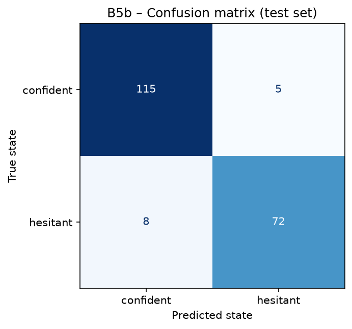
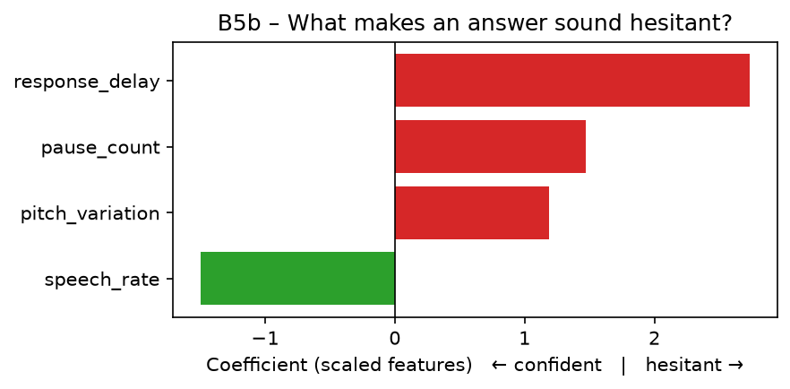
"Nine!" -> {'state': 'confident', 'p_hesitant': 0.003}
"Hmm... nine?" -> {'state': 'hesitant', 'p_hesitant': 1.0}
b5b_detect_confidence(speech_rate, pause_count, response_delay, pitch_variation) → {state, p_hesitant}.
Role: at the start of a session the tutor chats with Can. B1 finds his interest (for personalised word problems) and B2 the math topic he struggles with. Both also return the sentiment of the message: "I love football" and "I hate football" are both about sports, but only the first should be used for word problems.
Code: no public dataset of children's chat messages with these labels exists, so messages are generated from templates and word pools. B1 has 15 items per interest (e.g. ("football", "played football")), B2 has 10 phrases per topic ("the times tables", "borrowing in subtraction"), and ~16 templates per sentiment. Variable slots (when, with whom, openers such as "Guess what?", endings such as ":)") make every template produce many sentences. To keep the task realistic:
B1: generated 1600 messages, removed 3 duplicates -> 1597 unique
B2: generated 1500 messages, removed 108 duplicates -> 1392 unique
e.g. "Well, volleyball is not fun at all" -> sports, negative
"Um, fractions of a pizza is so hard" -> fractions, negative
A model needs numbers, so TF-IDF turns every message into a vector with one column per vocabulary word. TF = how often the word appears in the message; IDF = how rare the word is across all messages; TF-IDF = TF × IDF. Common words (with, my) get low weights, distinctive words (football, pizza) high weights. The notebook illustrates this on three messages: football 0.59, pizza 0.55, cat 0.66, while my and with get 0.33–0.39. The vectorizer is the first step of the pipeline, so the vocabulary and IDF weights are learned from training messages only.
b1_model = Pipeline([("tfidf", TfidfVectorizer()),
("classifier", LogisticRegression(max_iter=1000, random_state=RANDOM_STATE))])
Training messages: 1277 Test messages: 320 Vocabulary size: 349 Training accuracy: 0.934 Test accuracy: 0.884 animals F1 0.87 | food F1 0.90 | games F1 0.90 | sports F1 0.88 (37 misclassified)
Interpretation: 88.4 % test accuracy. The misclassified messages are the deliberately confusing ones, e.g. "I hate puppies. Then I played basketball." (true animals, predicted sports) – the second sentence about another interest wins. The top-words plot shows the model relies on the expected words (football, gymnastics, team for sports; fish, cat, puppies for animals). The word my is among the animal words because pets are mentioned as my cat, my dog – a pattern of the templates, not of the meaning.


Same pipeline (TF-IDF → Logistic Regression), 1,113 training and 279 test messages.
Training accuracy: 0.930 Test accuracy: 0.892 (F1 0.88–0.92 for all five topics; 30 misclassified)
Most mistakes are messages with two topics, e.g. "Long division is easy, but I cried during subtracting big numbers" → predicted division (the model does not understand that but flips the meaning), or phrases that belong to two topics ("repeated addition" = multiplication).

Code: one 3-class model (positive / neutral / negative) is trained on all B1 and B2 messages (2,989 messages). TF-IDF on single words ignores word
order, so in "Chess is not boring" the word boring points to negative. With ngram_range=(1, 2) TF-IDF also creates features for
pairs of neighbouring words (bigrams, e.g. "not boring", "so boring"). Both versions are compared.
single words (1,1) test accuracy: 0.893 words + word pairs (1,2) test accuracy: 0.905 "Chess is so boring": (1,1) -> positive (wrong) (1,2) -> negative (correct)
The bigram version is kept as sentiment_model (negative F1 0.92, neutral 0.90, positive 0.89).
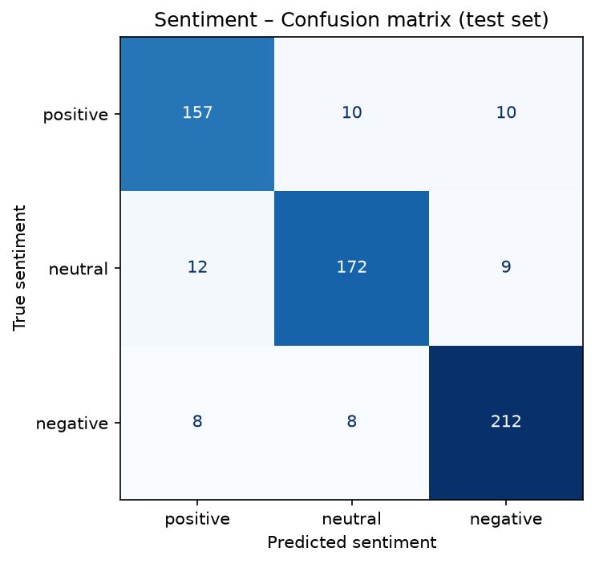
b1 "Today I played football with my friends, it was awesome!" -> sports 0.715, positive, use_for_problems True b1 "I hate football, it's so boring" -> sports 0.797, negative, use_for_problems False b1 "I played soccer today" -> games 0.487, neutral (wrong: 'soccer' unknown) b2 "I don't understand multiplication at all" -> multiplication 0.738, negative, start_easy True b2 "Can we practice dividing by 3?" -> division 0.943, neutral, start_easy False
b1_analyze_message(msg) → {interest, probability, sentiment, use_for_problems} (False if negative);
b2_analyze_message(msg) → {topic, probability, sentiment, start_easy}. The word soccer was deliberately left out of the
training data: TF-IDF ignores unknown words, so the prediction is wrong. A pretrained language model such as DistilBERT knows that
soccer ≈ football and is the natural next step (Section 16).
Role: after every answer the tutor updates how well Can has learned each topic and keeps it as a time series (requirement R6).
Definition: mastery of a topic = the probability that the student answers a medium-difficulty question of that topic correctly while
attentive. This is knowledge tracing; our model, a Logistic Regression on the answer history, is known as Performance Factors Analysis.
The label is_correct is free: the tutor knows it after every answer.
Code: instead of random rows we simulate students (make_student_profile, simulate_student). Every student has a hidden
skill per topic: the starting skill depends on the topic (fractions harder than addition) and the student's general ability; it grows with
practice at a personal learning rate. An answer is correct with a probability depending on skill, difficulty and attention, plus guess (0.15)
and slip (0.05, tripled when not attentive). Every student also has a personal distractibility (B4 state) and speech preference
(answer_mode); hesitation (B5b) is recorded only for spoken answers and is more likely when the child does not know the answer.
Schedule: day 0 = placement test (5 medium questions per topic), then 27 days with 8–12 questions (20 % of days skipped).
Answers: 48047 | students: 200 | days: 28 Overall share of correct answers: 0.61 addition 0.756, subtraction 0.709, multiplication 0.582, division 0.525, fractions 0.476
Because the simulation is ours, the hidden true_mastery is known at every moment – this allows checking the estimate against the truth.
add_history_features(log) groups the answers by student and topic and uses shift() so that a row never sees its own result (no leakage):
attempt_no – questions of this topic answered before;prev_correct_ratio – smoothed share correct so far, (correct + 1) / (answers + 2), so a new student starts at 0.5 instead of 0/0;recent_correct_ratio – the same over the last 5 answers (recent progress);prev_hesitant_ratio – share of hesitant spoken answers so far (from B5b). Confidence enters as history: B5b measures it while the
child answers, so using the current answer's confidence to predict that same answer would leak label information.Output: e.g. student S000's first multiplication answers: attempt 0 → ratio 0.500, after one wrong answer → 0.333, after a correct one → 0.500.
GroupShuffleSplit splits the students, not the rows: 160 students (38,531 answers) for training, 40 unseen students (9,516 answers)
for testing, 0 students in both. A random row split would let the model "know" the test students.
b6_model = Pipeline([("prepare", ColumnTransformer([
("numeric", StandardScaler(), B6_NUMERIC),
("categorical", OneHotEncoder(handle_unknown="ignore"), ["topic", "attention"])])),
("classifier", LogisticRegression(max_iter=1000))])
Numeric columns are scaled; topic and attention are one-hot encoded and not scaled.
Accuracy (threshold 0.5): 0.679 ROC AUC: 0.725 (always guessing 'correct': 0.599)
Coefficients: attention_attentive +0.523, prev_correct_ratio +0.424, topic_addition +0.386, attempt_no +0.319,
... attention_distracted -0.229, topic_fractions -0.259, difficulty -0.379
Interpretation: predicting a single answer is inherently uncertain (guesses and slips), so 68 % accuracy is expected; AUC 0.725 shows the model ranks correct answers above wrong ones well. More important for a percentage is calibration: the points lie close to the diagonal, i.e. when the model says 70 %, about 70 % of the answers are correct. The coefficients have the expected signs: attention, past success, practice and easy topics increase the chance; difficulty, fractions and distraction decrease it.

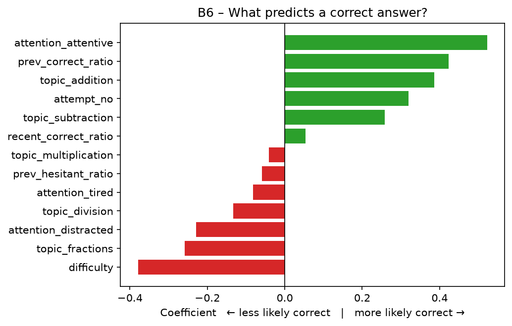
mastery_estimate sets every row to a medium question while attentive and returns the model's P(correct). It is compared with the hidden true
mastery and with a formula without machine learning (correct answers ÷ answers so far).
Average error of the mastery estimate (test students): B6 model 8.1 percentage points | simple formula 16.0
The model halves the error, because it corrects for difficulty, attention and topic, and its past-ratio does not mix old and recent knowledge as badly.
questions answered: 0 1 2 3 5 10 20 30 B6 model error: 12.4 11.8 11.0 10.0 8.9 8.2 7.8 7.6 formula error: 15.2 15.1 14.8 13.7 12.5 12.9 14.2 17.6
For a new student the model starts from the average student (12.4 pp error); after the 5 placement questions per topic the error drops to 8.9 pp. The simple formula gets worse after 10 answers because it never forgets old mistakes while the student keeps learning.
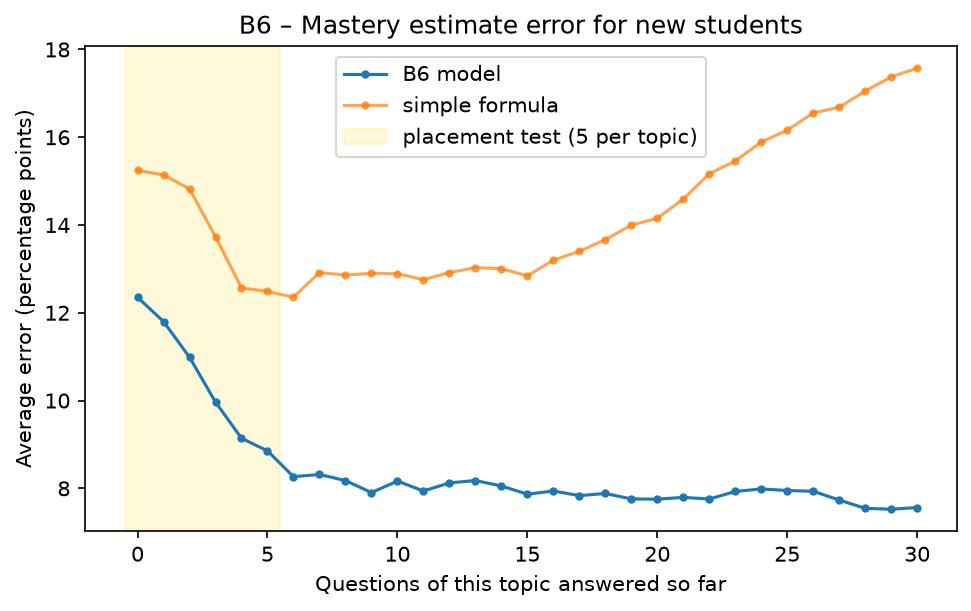
b6_mastery(answers) takes all answers of one student, appends one "probe" row per topic (medium question, attentive), computes the history
features and returns {topic: mastery %}. Can is simulated as a new student (good at addition, weak at multiplication and fractions).
Before any answer: addition 62.9, subtraction 59.9, multiplication 52.5, division 50.2, fractions 47.1 After the placement test: addition 82.8, subtraction 65.5, multiplication 38.8, division 46.1, fractions 44.1 After 4 weeks: addition 86.6, subtraction 86.5, multiplication 53.9, division 67.3, fractions 65.6
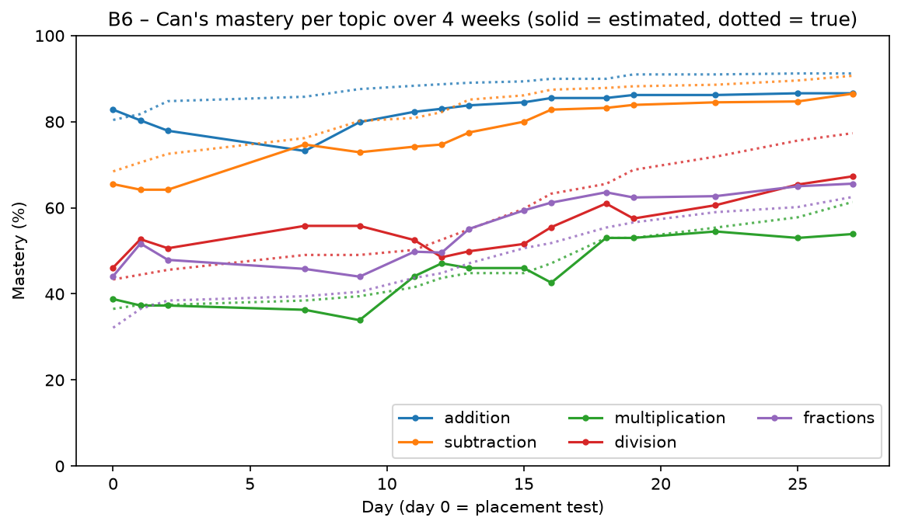
Interpretation: the placement test immediately reveals Can's weakness in multiplication (52.5 → 38.8 %). Over four weeks every topic improves, and the estimated curves follow the true curves; multiplication remains his weakest topic, which matches what he wrote in the chat (B2).
Role: B6 tells how often Can is wrong, B7 tells why. Why unsupervised: nobody labels the reason of a wrong answer – the tablet only knows the question and the answer read by B3 or B5a. K-Means groups similar wrong answers; afterwards we name the groups.
Code: for each wrong answer in B6's log, make_question creates a question (bigger numbers for harder questions) and
wrong_answer produces the child's answer from one of four hidden error types:
| Hidden error type | Example | What happens |
|---|---|---|
forgot_carry | 47 + 38 → 75 (correct 85) | forgets the carry / borrow → off by exactly 10, 100, … |
careless_slip | 47 + 38 → 84 | off by 1 or 2 (fraction: numerator off by 1) |
wrong_operation | 47 + 38 → 9 | uses another operation |
fraction_rule | 1/2 + 1/3 → 2/5 | adds numerators and denominators separately |
needs_carry checks the written column method (a carry only from a non-leftmost column counts); a forgotten carry is only possible when it is 1.
Careless slips are twice as likely when B4 says distracted or tired; every student has a personal tendency (Dirichlet weights), which B8 uses later.
The hidden type is never given to K-Means.
Wrong answers: 18740 from 200 students careless_slip 9009, wrong_operation 5110, fraction_rule 2934, forgot_carry 1687 e.g. 44 - 35 -> 19 (forgot_carry) 2/6 + 2/3 -> 4/9 (fraction_rule) 6 × 4 -> 10 (wrong_operation)
K-Means uses straight-line distances, so the columns define "similar". The raw columns fit badly: 47 + 38 → 75 and 472 + 38 → 400 are the same mistake but
differ by −10 and −110. b7_features therefore derives four size-independent features:
| Feature | Formula | Typical values |
|---|---|---|
size_ratio_log | |log₂(given ÷ correct)| | 0 = same size, 1 = half or double |
error_steps_log | log₁₀ of |difference| in steps (1, or 1/denominator) | 0 = one step off, 1 = 10 steps |
diff_is_tens | 1 if the difference is ±10, ±20, ±100 … | forgotten carry / borrow |
same_denominator | 1 if a fraction answer keeps the correct denominator | 0 → fraction rule |
The features are standardised (output: mean 0, std 1 for all four). There is no train/test split – there are no labels. In the app the scaler and K-Means are fitted once on stored wrong answers and every new wrong answer is only transformed and assigned.
Inertia is the total squared distance of points to their cluster centre; it always falls with more clusters, and we look for the "elbow". The silhouette score (−1 … 1) measures how much closer each point is to its own cluster than to the next one.
k: 2 3 4 5 6 7 8 silhouette: 0.491 0.628 0.717 0.678 0.677 0.665 0.606
Both measures point to k = 4: the elbow is at 4 and the silhouette is highest there (0.717 = well separated clusters).
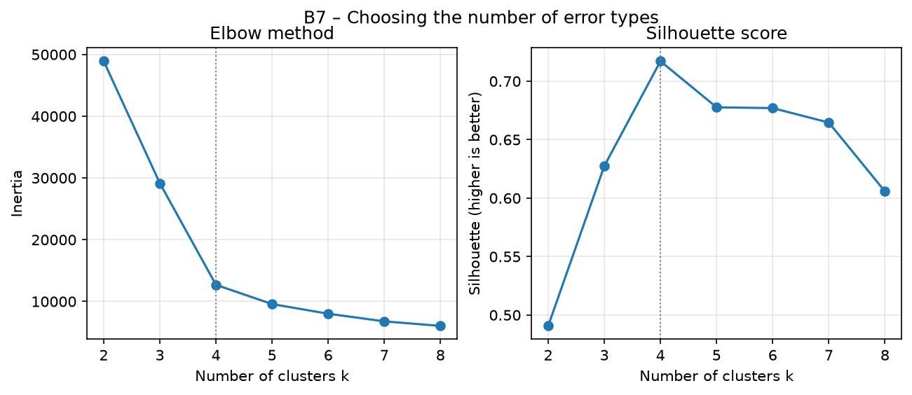
KMeans(n_clusters=4, n_init=10) returns only numbers 0–3; the code names them automatically from the centres: most diff_is_tens →
forgot_carry; fewest same_denominator → fraction_rule; of the remaining two, smaller error_steps_log → careless_slip, the other → wrong_operation.
Each type has a teacher hint (B7_HINTS).
cluster size_ratio_log error_steps_log diff_is_tens same_denominator name size 0 0.30 0.18 0.00 1.0 careless_slip 10296 1 1.01 0.70 0.00 0.0 fraction_rule 2934 2 0.68 1.40 1.00 1.0 forgot_carry 2110 3 2.24 1.77 0.01 1.0 wrong_operation 3400
With real data clusters can only be judged by inspection; with our synthetic data we compare them with the hidden types using a cross table and the Adjusted Rand Index (ARI: 1 = perfect match, 0 = random).
hidden \ found forgot_carry careless_slip wrong_operation fraction_rule forgot_carry 99.9 0.0 0.1 0.0 careless_slip 0.0 100.0 0.0 0.0 wrong_operation 8.3 25.2 66.5 0.0 fraction_rule 0.0 0.0 0.0 100.0 ARI (shape features): 0.768 matching name: 90.9 % ARI (raw columns): 0.028
Interpretation: three types are found almost perfectly. A quarter of the wrong operations land in "careless slip" because with small numbers they look like a slip (2 × 3 → 5 is 2 + 3, but also only one off). With the raw columns K-Means finds nothing useful (ARI 0.028) – the feature design is what makes the unsupervised block work.

47 + 38 = 75 -> forgot_carry Practise column addition / subtraction with carrying ... 47 + 38 = 84 -> careless_slip Knows the method – ask him to check his answer ... 7 × 8 = 15 -> wrong_operation Mixes up the operations – practise reading the sign ... 1/2 + 1/3 = 2/5 -> fraction_rule Adds tops and bottoms – revisit common denominators ... 47 + 38 = 85 -> None (correct)
b7_error_type(operation, a, b, given) → {error_type, hint}. Can's 4 weeks from B6.8 are then sorted by B7 (week 1: 4 forgotten carries,
12 slips, 3 wrong operations, 4 fraction rules; week 4: 1, 8, 1, 1 – fewer errors as he learns).

Characteristic error (input of B8). The most common error is careless_slip for 191 of 200 students (slips are frequent for everybody), so it says nothing about a student. Instead we use the type a student makes more often than the average student (own share ÷ class average share). This spreads the students (wrong_operation 67, forgot_carry 51, careless_slip 44, fraction_rule 38) and matches the hidden tendencies reasonably (e.g. 43 of the "wrong operation" students are recognised). Can's ratio for forgot_carry is 1.51 → his characteristic error is forgot_carry.
Role: a teacher with 25 children needs to know which kinds of learners there are and what to do with each kind (requirement R8: extract learning patterns to develop better teaching mechanisms). Nobody labels children as "type A", so the profiles are discovered by K-Means.
b8_student_row(log, characteristic_error) builds the five inputs from the B6 log and B7:
avg_accuracy – share of correct answers over 4 weeks;learning_speed – slope of the student's learning curve: the coefficient of attempt_no (per 10 questions) in a small per-student
Logistic Regression with topic, difficulty and attention held fixed. A first idea (mastery after 4 weeks − after placement) made weak students look
fast (correlation with the hidden learning rate only 0.36); the slope reaches 0.74;avg_attention – share of answers given while attentive (B4);spoken_answer_ratio – share of answers given by voice (B5a) instead of handwriting (B3);characteristic_error – from B7.Students: 200 avg_accuracy mean 0.608 | learning_speed 0.313 | avg_attention 0.678 | spoken_answer_ratio 0.389 S000: 0.623, 0.355, 0.667, 0.359, forgot_carry
A ColumnTransformer scales the four numeric columns and one-hot encodes characteristic_error. Two different errors are √2 ≈ 1.4 apart
in the one-hot columns – as much as a large numeric difference – so the one-hot part gets a weight of 0.5 (transformer_weights);
the error type then adds information without dominating. Output: 8 columns per student (e.g. S000: 0.13, 0.26, −0.08, −0.16, 0.5, 0, 0, 0).
k: 2 3 4 5 6 7 8 silhouette: 0.211 0.204 0.194 0.192 0.187 0.186 0.187
Interpretation: the silhouette stays around 0.2 and there is no clear elbow. This is an honest finding: children are not made of a few separate types – ability, speed and attention vary continuously. K-Means still gives a useful segmentation. We choose k = 4: four teaching strategies are manageable for a teacher and the groups are easy to name.
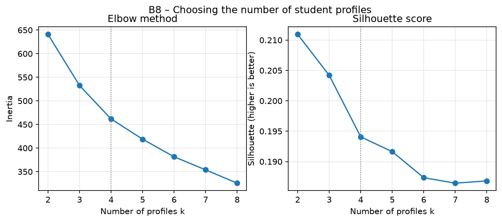
describe_profile names every profile after the features whose centre differs from the average student by at least 0.5 standard deviations,
using a table of names and recommendations (e.g. low avg_attention → "Easily distracted – short sessions (10 min) with breaks and game elements").
| Profile | Students | avg_accuracy | learning_speed | avg_attention | spoken ratio | Recommendations |
|---|---|---|---|---|---|---|
| 0 Fast learner · Prefers writing | 62 | 0.678 | 0.440 | 0.753 | 0.261 | next level sooner; handwriting by default; challenge problems; longer sessions |
| 1 Prefers speaking | 56 | 0.640 | 0.322 | 0.697 | 0.577 | voice answers by default; run the voice calibration (B5a.9) |
| 2 Slow progress · Needs support | 38 | 0.481 | 0.110 | 0.754 | 0.380 | more practice, spaced repetition; easy questions first |
| 3 Easily distracted | 44 | 0.577 | 0.298 | 0.483 | 0.336 | short sessions with breaks and game elements |
Within "Slow progress · Needs support", 50 % have wrong_operation as characteristic error (they still mix up operations); within "Easily distracted", careless_slip is most frequent (34 %) – consistent with slips doubling when not attentive.
Without labels there is no accuracy; the profiles are checked in three ways: a heatmap of the centres, a 2-D PCA picture, and the hidden traits of the simulation.
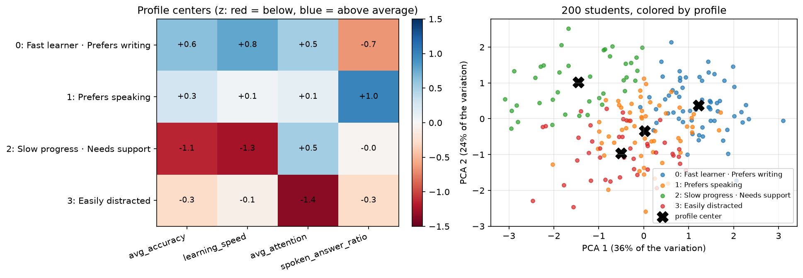
correlation with hidden traits: avg_attention ↔ distractibility -0.98 | spoken_answer_ratio ↔ speech preference 0.99
learning_speed ↔ learning rate 0.75 | avg_accuracy ↔ ability 0.75
hidden distractibility: profile "Easily distracted" 0.413 vs. 0.15–0.21 in the others
hidden ability: profile "Slow progress · Needs support" -0.706 (lowest)
Interpretation: the profiles correspond to real hidden differences that K-Means never saw. Learning speed is the noisiest input – about 250 answers in four weeks are few for estimating a slope; it would become more reliable over a semester.
Can's B8 input: avg_accuracy 0.581, learning_speed 0.326, avg_attention 0.611, spoken_answer_ratio 0.527, forgot_carry B8 output: profile 1 – Prefers speaking • Voice answers by default; run the voice calibration (B5a.9). • error: Practise column addition / subtraction with carrying and borrowing step by step.
b8_student_profile(...) transforms a new student with the fitted preprocessing and assigns the nearest profile; it returns the profile name, the
recommendations and the B7 hint. Can was not used to fit K-Means, so this is a genuine "new student" case.
Each block is a function with a defined input and output, so outputs of one block become attributes of the next:
| From | Output | Used by | As attribute |
|---|---|---|---|
| B1 | interest + sentiment | question selection | topic of word problems (only if not negative) |
| B2 | topic + sentiment | question selection | topic to practise; start_easy |
| B3 / B5a | digit read from the answer | grading → B6, B7 | is_correct (B6), given_answer (B7) |
| B4 | attention state | B6, B7, B8 | attention (B6), slip rate (B7), avg_attention (B8) |
| B5b | confident / hesitant | B6 | prev_hesitant_ratio |
| B6 | answer log, mastery % | B7, B8, dashboard | wrong answers (B7), avg_accuracy, learning_speed (B8) |
| B7 | error type per wrong answer | B8, dashboard | characteristic_error |
| B8 | profile + recommendations | dashboard, session settings | session length, default answer mode |
In Can's case the chain gives one consistent picture: B2 hears that multiplication is hard, B6 confirms it as his weakest topic (53.9 % after four weeks), B7 shows that he tends to forget carries, and B8 classifies him as a child who prefers speaking, recommending voice answers with calibration and step-by-step carrying practice.
We described the requirements of an intelligent tutoring system and expressed Math Buddy's functionality as six supervised perception blocks (text, visual, audio), one supervised knowledge-tracing block and two unsupervised discovery blocks. For every block we defined the input attributes and the output structure and implemented it in Python. The supervised blocks reach 88–97 % test accuracy on their tasks; B6 estimates mastery with an average error of 8.1 percentage points – half that of a simple formula – and tracks it over time; B7 recovers error types with 90.9 % agreement; B8 finds learning profiles that match hidden student traits and turns them into teaching recommendations. The honest limitations found along the way (real drawings, unseen voices, unknown words) show where real data and stronger models are needed next.
sklearn.datasets.load_digits (UCI Optical Recognition of Handwritten Digits); MNIST – LeCun, Cortes, Burges, via OpenML mnist_784.